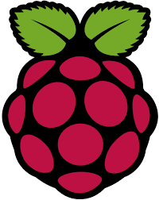

Mes projets
🌍 Site web d'agence de voyage
Création d’un site web fictif responsive permettant de présenter des destinations, offres et informations de voyage. Travail sur la structure HTML et le design CSS.
Technologies : HTML, CSS

🎮 Game Jam Montpellier
Développement d’un jeu vidéo en équipe de 4 lors d’une Game Jam de 30h. Gestion du gameplay, logique du jeu et collaboration en équipe.
Technologies : Lua, LOVE2D

🐧 Linux & Raspberry Pi
Découverte du système Linux, utilisation du terminal, installation de services et manipulation d’un Raspberry Pi pour comprendre les systèmes embarqués.
Technologies : Linux, Terminal, Raspberry Pi